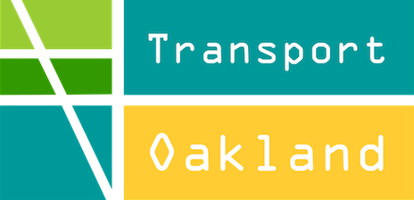

Transport Oakland advocates for forward-looking leadership from existing and aspiring elected officials on transportation issues that are critical to the livability and economic vitality of Oakland. We are a group of transportation professionals who live or work in Oakland and care about the future of our city. The group has policy expertise and volunteer hours to support candidates who are committed to a new vision for Oakland’s streets.

Great transportation means having safe and attractive choices to navigate Oakland, whether you are driving, taking the bus or BART, walking, or riding a bicycle. Cities around the world have started to experiment with new ways of designing streets to provide these choices. Low-cost treatments using paint, green planters, and seating can transform a street into a different and better place in as quickly as one to two years in parallel to longer term major capital investments such as BART extensions.
Great transportation reflects the community it exists in, making it a key part of Oakland’s infrastructure and resulting in measurable benefits including increased retail sales, improved public health through physical activity, reduced crime, improved air quality, and greater ownership of our streets.
In Oakland, many of our streets were designed in a different era with different needs and priorities. Many streets are imbalanced with more concrete dedicated to cars than is (or will be) necessary.. Downtown Oakland is comprised of many one-way three- and four-lane streets that are never even close to full. In the last ten years, traffic in downtown Oakland has actually decreased by about 25%, even as more than 10,000 more residents have moved into the city.
Now is an exciting time for local policy-makers to provide transportation leadership. Several near-term opportunities exist to provide noticeable and lasting benefit to the city. We are proposing that elected leaders endorse the following 3-part platform. Funding for these priorities is already available with no additional taxes or fees needed, especially if Alameda Measure BB passes in the November election.
Oakland residents that voted for Measure B1- an increase in a local sales tax for improved transportation-- in 2012 election.
Unspent dollars allocated for Oakland street repaving.
Number of Oakland residents who commute by a mode other than a single occupancy vehicle.
Decrease in automobile traffic in downtown Oakland at same time downtown residents increased by 10,000+.
Number of jobs created by BART Oakland Airport Connector project alone.
Peer cities without a Department of Transportation or equivalent.
These resources offer information useful to Oakland transportation users and voters.
Covering livable streets and sustainable transportation in San Francisco and the Bay Area: SF Streetsblog
All things urban, from The Atlantic: CityLab
City of Oakland transportation services & resources: Streets & Sidewalks, Bicycle & Pedestrian Facilities, & Traffic Safety & Parking
Alameda County: Register to vote
City of Oakland: Council District Locator
Oakland Wiki: 2014 Mayoral Election
Oakland Wiki: 2014 City Council Election